protocols-i2c-what-causes-shark-fin-waveforms-on-the-rising-edge-of-an / image_1
I2C rise-time limit waveform_comparison
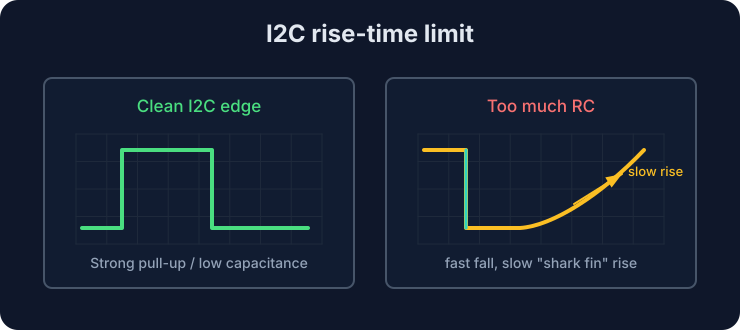
Prompt
An oscilloscope waveform comparison. Left: clean square I2C pulse. Right: "shark fin" waveform where the falling edge is steep, but the rising edge is a slow RC curve.
protocols-spi-if-an-spi-sensor-datasheet-states-data-is-sampled-on-the / image_1
SPI mode timing spi_timing
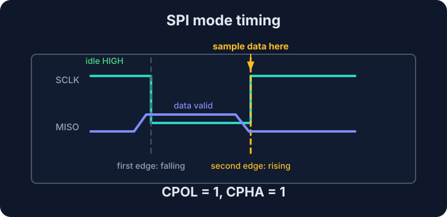
Prompt
A timing diagram showing a single SPI clock cycle starting HIGH (idle), falling (first edge), then rising (second edge). A dashed line on the rising edge says "Sample Data."
protocols-system-architecture-how-many-mcu-pins-are-required-to-connec / image_1
I2C vs SPI pin count bus_comparison
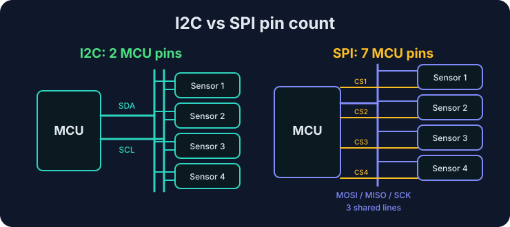
Prompt
Block diagrams. Left: 1 MCU to 4 slaves via 2-wire I2C. Right: 1 MCU to 4 slaves via SPI, showing 3 shared lines and 4 distinct CS lines.
protocols-i2c-if-you-put-two-identical-sensors-on-the-same-i2c-bus-and / image_1
I2C address selection i2c_address_pins
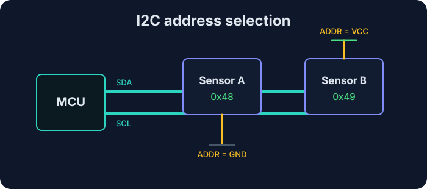
Prompt
Schematic of an MCU connected to two identical I2C sensors. Sensor 1's ADDR pin is tied to GND, Sensor 2's ADDR is tied to VCC, with a label showing different hex addresses.
components-what-specification-dictates-an-op-amp-s-maximum-output-volt / image_1
Op-amp slew-rate limit op_amp_slew
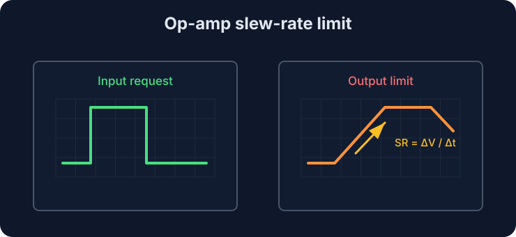
Prompt
Op-amp diagram. Left: a sharp square wave input. Right: distorted output showing a sloped ramp, labeled 'Slew Rate (ΔV/Δt)'.
components-aside-from-maximum-current-rating-what-two-critical-specifi / image_1
LDO thermal path ldo_thermal
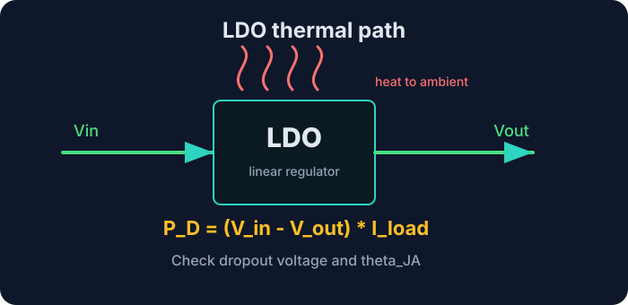
Prompt
Thermal block diagram of an LDO package radiating heat. Shows the equation P_d = (Vin - Vout) * I_load, and thermal resistance (θ_JA) from junction to ambient.
components-what-buck-converter-specification-dictates-the-required-siz / image_1
Synchronous buck converter buck_power_stage
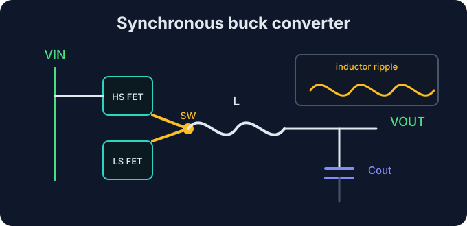
Prompt
Schematic of a synchronous buck converter highlighting the switching node (SW), inductor (L), and output capacitor (Cout), overlayed with a graph of inductor current ripple.
components-what-key-specs-do-you-look-at-when-selecting-an-op-amp-and / image_1
Op-amp selection matrix op_amp_spec_matrix
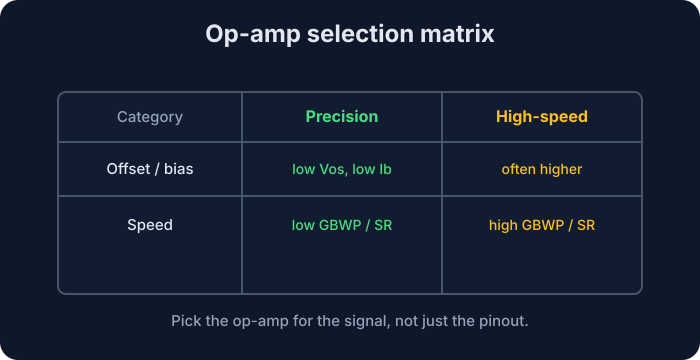
Prompt
A matrix mapping Op-Amp categories (Precision, High-Speed) to typical parameter ranges (e.g., Precision: Vos < 50μV).
components-what-key-specs-do-you-look-at-when-selecting-an-ldo-and-wha / image_1
LDO PSRR and quiescent current ldo_psrr_iq
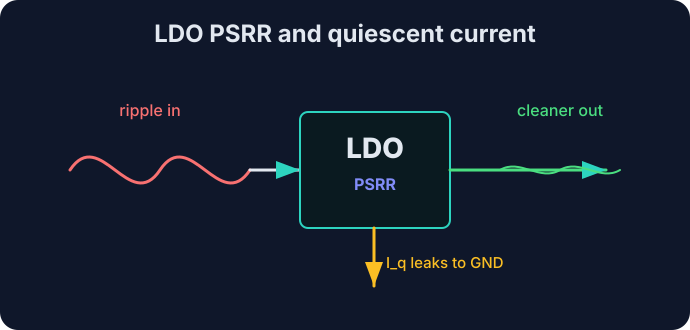
Prompt
Block diagram of an LDO smoothing input ripple (PSRR), with an arrow showing internal current leaking to ground (Quiescent Current).
components-what-key-specs-do-you-look-at-when-selecting-a-capacitor-an / image_1
Capacitor DC-bias effect capacitor_bias_chart
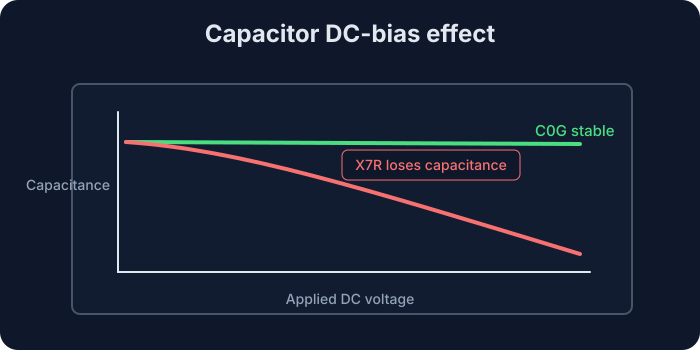
Prompt
Chart comparing X7R vs C0G, showing X7R capacitance dropping significantly as applied DC voltage increases.
components-what-key-specs-do-you-look-at-when-selecting-a-power-induct / image_1
Power inductor limits inductor_limits
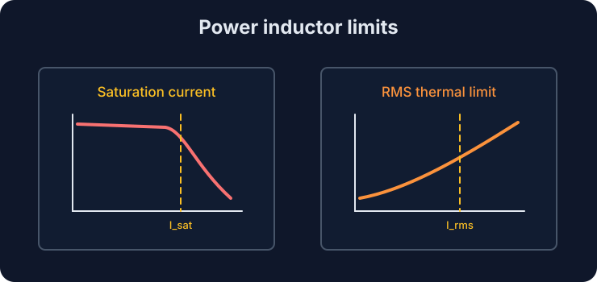
Prompt
Graphs showing Inductance vs DC Current (marking the sharp I_sat drop) and Temperature vs DC Current (marking I_rms limits).
components-what-key-specs-do-you-look-at-when-selecting-a-tvs-diode-fo / image_1
TVS diode I-V curve tvs_iv_curve
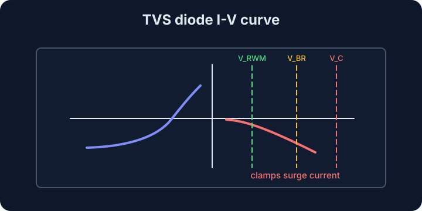
Prompt
I-V curve of a TVS diode marking Reverse Standoff Voltage, Breakdown Voltage knee, and the Clamping Voltage region.
components-what-key-specs-do-you-look-at-when-selecting-a-buck-convert / image_1
Integrated buck block diagram buck_ic_block
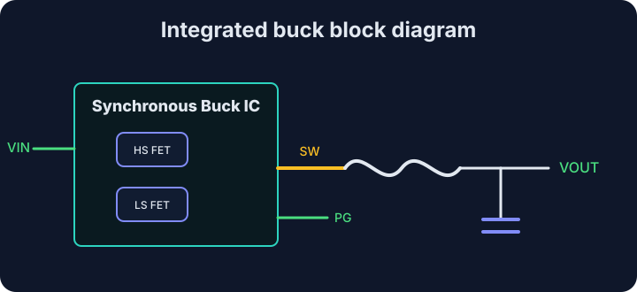
Prompt
Block diagram of an integrated synchronous buck IC showing internal high/low-side MOSFETs and external LC filter nodes.
components-what-key-specs-do-you-look-at-when-selecting-a-surface-moun / image_1
SMD resistor package ratings smd_resistor_packages
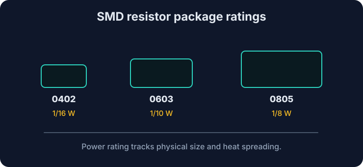
Prompt
Graphic showing standard SMD footprints (0402, 0603, 0805) marked with their maximum wattage limits.
components-what-key-specs-do-you-look-at-when-selecting-an-n-channel-p / image_1
MOSFET output characteristics mosfet_characteristics
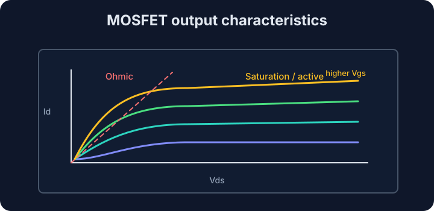
Prompt
Transistor characteristic curve (Id vs Vds for different Vgs lines), showing the visual boundary between the Ohmic and Saturation regions.